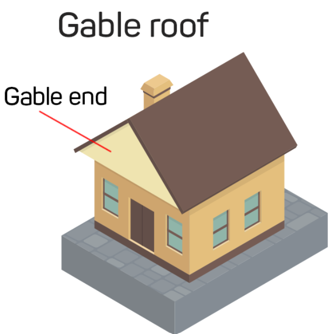
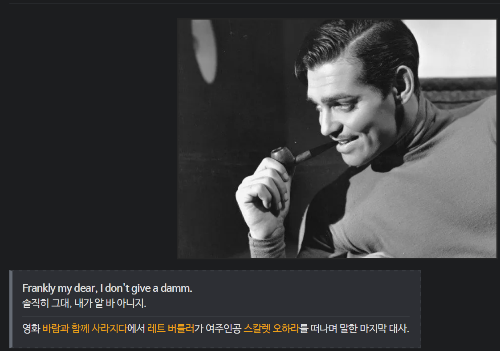

이상하지 않는데 내 눈에만 이상하게 보이는 건지.
2024.11.16
출퇴근을 걸어서 하면서 세상의 이상한 것을 더 자주 접하게 된다.
소시적 운전 면허를 따기 위해 읽었던 도로교통법에 따르면 도로 상에는 소가 끄는 우마차도 끌고 나올 수 있다는 이야기가 있었는데 끽해 봐야 시속이 10km/h가 넘지 않는 저런 물건도 돌아다녀도 되는 지는 모르겠다.
혹시나 사고나 나지 않을까 해서 계속 살펴보았는데 유유히 사거리를 통과하여 제 갈 길로 사라졌다.
소시적 운전 면허를 따기 위해 읽었던 도로교통법에 따르면 도로 상에는 소가 끄는 우마차도 끌고 나올 수 있다는 이야기가 있었는데 끽해 봐야 시속이 10km/h가 넘지 않는 저런 물건도 돌아다녀도 되는 지는 모르겠다.
혹시나 사고나 나지 않을까 해서 계속 살펴보았는데 유유히 사거리를 통과하여 제 갈 길로 사라졌다.
건강은 남녀 노소를 가리지 않고 중요하다는 점에서 흰 머리가 희끗한 여성이 운동하는 모습을 모델로 한 점은 충분히 이해가 가고 또 그런 덕분에 광고에 눈길이 갔다. 그런데 대체 어떻게 계산해야 하루의 3%시간이 45분이 되는 지는 알 수가 없다.
박공 이란 단어는 실은 우리 말로 익힌게 아니라 영어 단어 gable 을 외우면서 박공 지붕이라는 설명을 읽었고 대체 박공이 뭔가 찾아봤더니

이런 삼각 지붕 모양이란 걸 거꾸로 알게 되었다. 그러면서 클라크 게이블 조상이 집 짓던 목수였나 싶기도 했다.

어쨋든, 저 박공 요가를 봤을 때 설마 저 박공이 박공지붕은 아니겠지 무슨 요가와 지붕이야 생각했는데 다시 눈을 비비고 보니 자세가 마치 삼각 지붕 같아서 정말 저 자세 이름이 '게이블' 일 지도 모르겠다 는 생각이 들었다. (뭐 일단 구글 검색에서는 안 걸리기는 하네)
점적 관수라는 게 점점히 물을 똑똑 떨어뜨려 가며 수목에 전달하는 건 맞긴 한데, 그러니까 맞긴 한데 말이지.